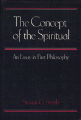

Analyzing the concept of the spiritual in the work of Presocratics through to a variety of twentieth-century philosophical perspectives
Analyzing the concept of the spiritual in the work of Presocratics through to a variety of twentieth-century philosophical perspectives


 Analyzing the concept of the spiritual in the work of Presocratics through to a variety of twentieth-century philosophical perspectives
Analyzing the concept of the spiritual in the work of Presocratics through to a variety of twentieth-century philosophical perspectives

|  |
The Concept of the SpiritualAn Essay in First PhilosophySteven G. Smithcloth EAN: 978-0-87722-553-9 (ISBN: 0-87722-553-2) |
"Smith�s effort to construct a convincing account of spirit is a bold move and, because of the history of the concept, one that may meet resistance even in quarters friendly to the idea. But the thesis cannot fail to arouse curiosity and move prospective readers to see what is afoot. Smith�s sensitivity to the criticisms of older dualistic conceptions should encourage a fresh look at a view of spirit transactionally, morally, and aesthetically conceived. By interpreting spirit as �reason�s reason,� he offers some new criticisms of standard views of objectivity and norms for descriptive truth. His account of spiritual causation is also interesting and well thought out, especially his rehabilitation of final cause by associating it with the bestowal of meaning."
—Edith Wyschogrod, Queens College, CUNY
The words "spirit" and "spiritual" represent what we feel to be most important in our lives, the most singular and commanding element in the human enterprise, the part most worth identifying with. In the English-speaking world, however, a long philosophical tradition of thinking about "spirit" has virtually lapsed, resulting in perplexities about values, morality, rationality, personhood—everything that gives us our basic orientation in life. Steven G. Smith traces The Concept of the Spiritual in the work of Presocratics through to a variety of twentieth-century philosophical perspectives. In analyzing the concept, he develops its implications into a "first philosophy," that is, a set of basic considerations that condition all thought and practice.
"This book is of very high quality: the author can write and write well. He has style and can turn a phrase in a way that gives the reader pleasure. He is not afraid to be critical of great names nor to propose difficult positions. He argues his ideas rather than merely asserts them, and has an admirable command of the history of philosophy.... The book is compelling and illuminating."
—Andrew Tallon, Marquette University
Steven G. Smith is Assistant Professor of Philosophy and Religion at Millsaps College.
© 2015 Temple University. All Rights Reserved. This page: http://www.temple.edu/tempress/titles/568_reg.html.